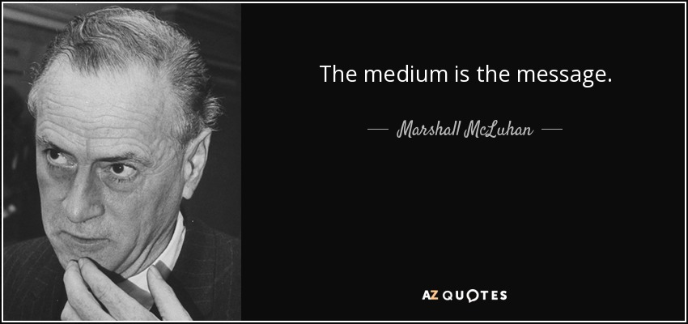

Reflection of the week: The Medium is the Message by Marshall McLuhan
By Jesse van der Merwe,
My Reflection About the Article

Image from here
“This is merely to say that the personal and social consequences of any medium / that is, of any extension of ourselves / result from the new scale that is introduced into our affairs by each extension of ourselves, or by any new technology” - Marshall McLuhan
The language that Marshall McLuhan uses to explain the concept is repetitive and painful to read, and I know I will have to read it a few more times to fully understand it. From what I could gather from Marshall McLuhan’s The Medium is the Message, it seems as if many people misunderstand (or at least misquote) the lesson that he is trying to teach. People try to put two and two together to conclude that, in terms of importance, the channel supersedes the context. I think instead the medium always announces an apparent 'truth' (and whether or not that 'truth' is actually true is another story).
An example would be that of photography versus art – if someone were to show you a photograph and a
drawing of the same scenario, but with different aspects included, which would you believe to be the
true reflection of reality? A few years ago, one would surely say with confidence that the
photograph has to be real version. This simple example shows how the medium can add it’s own truth
to the message contained within it.
Today we know that photographs can be edited, and so disbelief towards the absolute certainty in photographs is slowly becoming a new message as society fights against all things fake or false. This then continues in McLuhan’s message when he says that “it is only too typical that that “content” of any medium blinds us to the character of the medium.” I think ask time continues, and more 'new media' is produced and invented, the message in 'old media' will change.